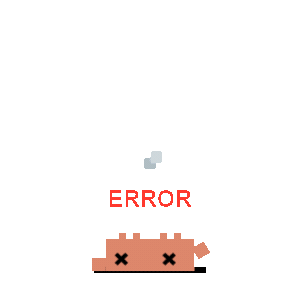
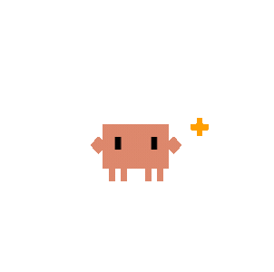
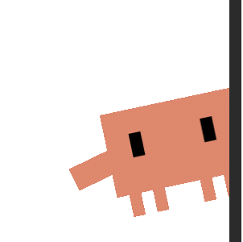
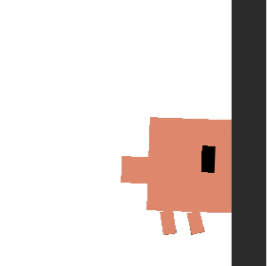

01 · first run · sign in with your Claude plan
Sign in with your
Claude plan
Claude plan
Clyde runs on your Claude subscription — the same Pro or Max plan you already pay for. No API key, no per-message billing.
powered by Claude · never an API key
Open Termux & start sign-in
Termux opens and runs claude login. Finish in your browser — Clyde never sees your password or token.
Signing in on the phone is awkward? Copy ~/.claude from desktop
Advanced: use an API key (not recommended) ›
02 · sign-in · verified, not token-handled
sign-in · verifying
Confirming your plan
Clyde asks the brain on your phone whether you're really signed in — it reads the result, it never touches your credentials.
~ $ claude login
→ opening browser to claude.ai…
✓ Logged in as Pro plan
~ $ claude /status
Brain reachable127.0.0.1:8765 · 240ms
Signed in on a subscriptionPro plan
No API key setchecking…
Clyde refuses to run if an ANTHROPIC_API_KEY is present — subscription only, by design.
Continue
03 · setup · auto-detected · one-button on root/custom ROM
setup · 1 of 1 on this phone
Clyde can set itself up
su
Root access found · LineageOS
probed: su -c id → uid=0 · getprop ro.lineage.version
Because this phone is rooted, Clyde grants every permission itself — no taps, no pairing codes. Watch it work:
✓Grant screen-reading & tap accesspm grant
✓Turn on accessibility servicesettings put secure
Stop Android killing the brainphantom procs off
4Keep awake & auto-start on bootTermux:Boot
Configure automatically
Set it up manually instead
04 · setup · stock phone · choose how much Clyde can do
setup · choose how much it can do
How much should Clyde do?
Stock phone, no root — so you pick. Start basic and add more later; you can change this any time.
Basic always works
Clyde reads your screen and taps for you — texts, reminders, opening apps.
One thing to do: flip the Accessibility toggle.
Full control recommended
Adds real typing, installing apps, and changing settings.
Clyde does the ADB setup; you read it one 6-digit code.
Set up Full control
What's the difference?
05 · full control · the one step only you can do
full control · 1 human step, then automatic
Read Clyde the pairing code
Android shows this code only in its own secure dialog, so it's the single thing Clyde can't do for you. Type it once.
427___
from Settings → Developer options → Wireless debugging → Pair with code
you do this
✓Turn on Developer optionstap Build no. ×7
✓Turn on Wireless debuggingdeep-linked
Read the 6-digit code into Clyde↑ above
Clyde does the rest
·Find the ports, pair & connectadb mdns
·Start Shizuku, copy rish into Termuxstart.sh
·Keep alive & re-arm after rebootBoot autostart
Heads up: wireless debugging resets on reboot. On Android 13+ Shizuku re-arms itself on trusted Wi-Fi; otherwise you'll re-read a code.
06 · ask over any app · listening
9:41
Saturday, June 20

Clyde
Claude
⌄
Text Mom I'm on my way …
07 · before something leaves your phone · confirm
9:41
Saturday, June 20

clyde wants to send a text · leaves your phone
엄마
Mom
+82 10-2934-7715
On my way, ~15 min.
one-time approval · tok_a91f6cexpires in 28s
Always let Clyde text my saved contacts
Don't send
Send it
08 · home
Clyde.
brain · 127.0.0.1:8765 · 240ms
signed in with
Claude plan
replies in
240ms
what Clyde can do now
Read & tap your screenon
Type & control appsworking now
Change system settingsneeds Full control
recent
Texted Mom “On my way…”
you approved · 2m ago
Opened Spotify
2m ago
Set a 10-minute timer
1h ago
assistant gesture opens
Clyde
Gemini
Turn Clyde off & sign out
09 · acting · minimized
9:41
Saturday, June 20
Following @nasa for youStop
tapping Follow · Instagram
10 · the answer · in Claude's voice
9:41
Saturday, June 20

Clyde
Claude
⌄
Sent.
I texted Mom “On my way, ~15 min.”
→ you approved · tok_a91f6c
→ send_sms · delivered
11 · Clawd · one node tree, an enum drives it
ActionState → animation
One Clawd composable. Skin = state class (rest clay · live blue · warn terracotta). The same node names (cwBody, cwClawL/R, cwStalkL/R, cwPupL/R, cwEye) animate in HTML and in Compose — author the Lottie on the same 24-grid. Loops run forever; one-shots play once then fall back to idle.

listeningblue · eye-stalks perk, eyes widen, lean-in. Mic open.loop
navigatingblue · sidestep scuttle. The minimized-FAB state.loopsuccessblue · both claws up + hop. Plays once → idle.once
consequenceterracotta · claws spread, slow pulse. The irreversible-send / error cue.once
// res/raw: clawd_idle.json, clawd_listening.json … (lowercase, no dashes)
enum ActionState{ Idle,Listening,Working,Navigating,Success,Consequence }
val comp by rememberLottieComposition(RawRes(state.res))
val p by animateLottieCompositionAsState(comp,
iterations = if(state.loops) IterateForever else 1)
LottieAnimation(comp,{p}) // p==1f on one-shot → emit ReturnToIdle
// skin tint via dynamic property on the shell layer:
// Idle #C9B6A2 · live #56C1DE · Consequence #D97757
12 · three glass surfaces · Haze + OS blur
Where glass is, and how it's built
Glass appears on exactly three surfaces, each with a different blur source. The crab and answer voice always sit on glass, never inside the blur.
AsummonOver another app. Only OS cross-window blur can blur it → FLAG_BLUR_BEHIND + setBlurBehindRadius(30dp).
Bstatus chipSame overlay window, lighter chrome. Same OS blur; smaller radius (16dp), tighter tint.
Cin-app sheetsInside our own window → Haze (hazeSource→hazeEffect). Confirm sheet deliberately opaque (no blur over a consequence).
// A/B OVERLAY over other apps — OS blur is the ONLY way
params.flags or= FLAG_BLUR_BEHIND
params.blurBehindRadius = 30.dp.toPx(); params.dimAmount = .30f
if(!wm.isCrossWindowBlurEnabled) scrim(#1A140E @30%) // fallback
wm.addCrossWindowBlurEnabledListener{ /* swap to scrim */ }
// C IN-APP panel — Haze captures our own content
Modifier.hazeEffect(state, HazeMaterials.ultraThin()){
blurRadius=30.dp; noiseFactor=.12f
tints=listOf(HazeTint(paper.copy(alpha=.30f))) }
.clip(RoundedCornerShape(22.dp))
.drawWithContent{ drawContent(); // top specular edge
drawRect(verticalGradient(0f to white.copy(.35f),
.4f to Transparent),size=Size(w,h*.4f)) }
.border(1.dp, white.copy(.18f), RoundedCornerShape(22.dp))
Glass recipe (all three): warm paper tint 88–92% over blur · 1px --line-2 hairline · inset top white specular (1px) · radius 22 (summon) / 16 (chip) · soft lift, no neon. Caveat: backdrop blur stalls headless screenshots — verify A/B on a real device (best-effort; off in battery-saver / no-GPU).